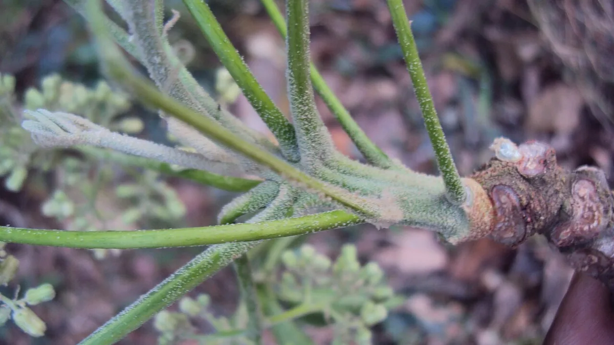

यह वह नीम नहीं है जिससे नीम तेल बनता है। मालाबार नीम 6–8 साल में प्लाईवुड लायक मोटाई पा लेता है — और इसकी पत्तियाँ कड़वी न होने से मवेशी छोटे पौधे चर जाते हैं।
✍️ Kunal Rajput — KrashiMitra⏱️ 10 मिनट पढ़ें📅 अगस्त 2026

मालाबार नीम (Melia dubia) — सीधा और लंबा तना ही इसे प्लाईवुड उद्योग की पसंद बनाता है।
सागौन जैसी लकड़ी, सागौन जितना इंतज़ार नहीं
🐐
मवेशी
छोटे पौधे चर जाते हैं
📏
440
पेड़ प्रति एकड़ (3×3 मी.)
🪵
3–4 मीटर
गाँठ-रहित तना चाहिए
📖
भूमिका
मालाबार नीम (मेलिया डूबिया, Melia dubia) को अक्सर "नीम" समझ लिया जाता है, पर यह वह नीम नहीं है जिसकी पत्तियाँ कड़वी होती हैं और जिससे कीटनाशक बनता है। यह उसी कुल का, पर बहुत तेज़ बढ़ने वाला इमारती लकड़ी का पेड़ है — और आज दक्षिण भारत के प्लाईवुड उद्योग की सबसे भरोसेमंद कच्ची लकड़ी में गिना जाता है।
इसकी असली खासियत रफ्तार है। जहाँ सागौन में 20–25 साल लगते हैं, वहाँ मालाबार नीम 6 से 8 साल में प्लाईवुड लायक मोटाई पा लेता है। यह पॉपलर जितना ही तेज़ है, पर पॉपलर के उलट इसे सर्दी की ज़रूरत नहीं — यानी यह दक्षिण और मध्य भारत के उन गर्म इलाकों में भी चलता है जहाँ पॉपलर नहीं चलता। इसी वजह से यह चंदन के बागानों में होस्ट पेड़ के रूप में भी बहुत लगाया जाता है। इस लेख में ज़मीन, दूरी, छँटाई, प्लाईवुड मिल का बाज़ार और वे बातें जो पौध बेचने वाले नहीं बताते।
विज्ञापन
🔍
यह "नीम" नहीं है — पहले यह भ्रम दूर कीजिए
नाम मिलता-जुलता होने की वजह से किसान अक्सर दोनों को एक समझ लेते हैं और गलत उम्मीद पाल लेते हैं। फर्क साफ है:
बात
देसी नीम (Azadirachta indica)
मालाबार नीम (Melia dubia)
मुख्य उपयोग
दवा, नीम तेल, जैविक कीटनाशक, छाया
इमारती लकड़ी — मुख्य रूप से प्लाईवुड
बढ़वार
धीमी
बहुत तेज़ — 6–8 साल में कटाई
पत्ती
बहुत कड़वी
कम कड़वी; मवेशी चर लेते हैं — इसलिए शुरुआती बचाव ज़रूरी
तना
अक्सर टेढ़ा और शाखादार
सीधा और लंबा — प्लाईवुड के लिए आदर्श
💡
अगर आपको नीम तेल या जैविक कीटनाशक चाहिए तो देसी नीम लगाइए। अगर आपको 6–8 साल में बिकने वाली लकड़ी चाहिए तो मालाबार नीम। दोनों का काम बिल्कुल अलग है।
🌍
ज़मीन और जलवायु
मिट्टी: गहरी, भुरभुरी, अच्छी निकासी वाली दोमट या लाल मिट्टी सबसे अच्छी। हल्की पथरीली ज़मीन में भी चल जाता है।
जलभराव नहीं: तेज़ बढ़ने वाले ज़्यादातर पेड़ों की तरह यह भी ठहरा पानी नहीं सहता।
पानी: तेज़ बढ़वार के लिए पानी चाहिए। बारिश के भरोसे भी चल जाता है, पर पहले 2 साल सिंचाई मिले तो बढ़वार साफ बेहतर रहती है।
जलवायु: गर्म जलवायु का पेड़ है — कर्नाटक, तमिलनाडु, केरल, आंध्र प्रदेश, तेलंगाना, महाराष्ट्र, गुजरात और मध्य भारत में अच्छा चलता है। पॉपलर की तरह इसे सर्दी की ज़रूरत नहीं।
पाला: तेज़ पाले वाले उत्तरी इलाकों में छोटे पौधों को नुकसान हो सकता है — वहाँ पहले जाड़े में बचाव चाहिए।
🌱
पौध, दूरी और रोपाई
पौध: बीज से तैयार पॉलीबैग पौध सबसे आम है; कुछ जगह क्लोनल पौध भी मिलती है। पौध सरकारी वन विभाग की नर्सरी, कृषि विश्वविद्यालय या मान्यता प्राप्त नर्सरी से लें। अच्छी वंशावली सीधे तने और तेज़ बढ़वार में दिखती है।
रोपाई का समय: मानसून की शुरुआत (जून–अगस्त)।
गड्ढा: लगभग 45×45×45 सेंटीमीटर, ऊपर की मिट्टी में सड़ी गोबर की खाद मिलाकर भरें।
मवेशी से बचाव — ज़रूरी: देसी नीम के उलट इसकी पत्तियाँ ज़्यादा कड़वी नहीं होतीं, इसलिए मवेशी और बकरियाँ छोटे पौधे चर जाती हैं। शुरुआती 2 साल घेराबंदी या ट्री-गार्ड ज़रूरी है। यह इस पेड़ की सबसे अनदेखी की जाने वाली ज़रूरत है।
पहले 2 साल: थाला साफ रखें और गर्मी में सिंचाई दें — इसी दौर में सबसे तेज़ बढ़वार होती है।
दूरी
लगभग पेड़ / एकड़
किसके लिए
2 × 2 मीटर
लगभग 1000
बहुत घना; जल्दी पतली लकड़ी और बीच में थिनिंग ज़रूरी
3 × 3 मीटर
लगभग 440
सबसे आम व्यावसायिक बागान
4 × 4 मीटर
लगभग 250
मोटाई ज़्यादा; बीच में फसल लंबे समय तक
5 × 5 मीटर या मेड़
लगभग 160 / कतार
खेती के साथ पेड़; चंदन बागान में होस्ट के रूप में
विज्ञापन
✂️
छँटाई — प्लाईवुड का पूरा दाम इसी पर टिका है
प्लाईवुड मिल में लट्ठे को खराद पर घुमाकर उसका पतला छिलका (विनियर) उतारा जाता है। इसलिए मिल को चाहिए सीधा, गोल और गाँठ-रहित लट्ठा। जिस तने पर गाँठें हैं, वहाँ छिलका फटता है — और वह लट्ठा कम दाम वाली श्रेणी में चला जाता है।
हर साल छँटाई करें: नीचे की बगल वाली डालें काटते जाइए ताकि तने का निचला हिस्सा साफ रहे।
तने से सटाकर काटें — ठूँठ छोड़ने पर वहीं गाँठ बनती है।
एक ही तना रखें: नीचे से दो-तीन तने निकल आएँ तो सबसे सीधा और मज़बूत एक रखकर बाकी काट दें। यह इस पेड़ में आम बात है और इसे समय पर ठीक करना ज़रूरी है।
कितना काटें: एक बार में पेड़ की आधी से ज़्यादा हरी पत्तियाँ न हटाएँ, वरना बढ़वार रुक जाती है।
थिनिंग: घनी दूरी (2×2 मीटर) पर लगाया हो तो 3–4 साल के आसपास कमज़ोर पेड़ निकालकर बाकी को जगह दें।
💡
लक्ष्य यह रखिए कि कटाई के समय तने का नीचे से कम से कम 3–4 मीटर हिस्सा सीधा और गाँठ-रहित हो। यही वह हिस्सा है जिस पर मिल सबसे अच्छा दाम देती है; ऊपर का बाकी हिस्सा कम दाम की श्रेणी में जाता है।
🌾
अंतर-फसल और चंदन के साथ जोड़ी
साल
बीच में क्या ले सकते हैं
1 – 2 साल
लगभग हर सामान्य फसल — दलहन, सब्ज़ी, हल्दी, अदरक, मूंगफली
3 – 4 साल
छाया बढ़ने लगती है — हल्दी, अदरक, अरबी जैसी छाया सहने वाली फसलें
5 साल के बाद
छाया घनी; चारा घास या मधुमक्खी पालन बेहतर विकल्प
एक खास बात: मालाबार नीम चंदन के लिए अच्छा स्थायी होस्ट पेड़ माना जाता है। कई किसान चंदन के बागान में इसे साथ लगाते हैं — इससे चंदन को होस्ट मिल जाता है, और 6–8 साल में मालाबार नीम की लकड़ी बिककर बीच के सालों का खर्च भी निकल आता है, जबकि चंदन 12–15 साल तक बढ़ता रहता है। यह जोड़ी व्यावहारिक रूप से बहुत समझदारी भरी है।
🏭
बाज़ार — किसे और कैसे बेचें
मुख्य खरीदार — प्लाईवुड मिल: दक्षिण भारत में इसका बाज़ार सबसे विकसित है। मिल आम तौर पर तने की मोटाई (गोलाई) और सीधे हिस्से की लंबाई के आधार पर श्रेणी बनाकर खरीदती है।
पैकिंग व पेटी की लकड़ी: पतले और कम गुणवत्ता वाले लट्ठे यहाँ जाते हैं।
माचिस उद्योग और हल्का फर्नीचर: इलाके के अनुसार।
बायोमास व ईंधन: टहनियाँ और बचा हुआ माल।
पहले पूछिए, फिर लगाइए: मालाबार नीम का बाज़ार दक्षिण भारत में मज़बूत है, पर उत्तर भारत में अभी सीमित। अगर आप उत्तर के किसान हैं तो पौध खरीदने से पहले अपने ज़िले की प्लाईवुड मिलों/आरा मशीनों से ज़रूर पूछ लीजिए कि वे मेलिया डूबिया लेते हैं या नहीं। वहाँ पॉपलर और यूकेलिप्टस का बाज़ार ज़्यादा पक्का हो सकता है।
⚠️
इस लकड़ी का कोई रोज़ प्रकाशित होने वाला मंडी भाव नहीं है — दाम इलाके, मोटाई और मिल की दूरी पर निर्भर करता है। इसलिए इंटरनेट पर दिख रहे किसी भी आँकड़े के बजाय अपने नज़दीकी 2–3 प्लाईवुड मिलों से खुद भाव पूछिए, और यह भी पूछिए कि वे किस न्यूनतम मोटाई से खरीदते हैं। कृषि मित्र कोई निवेश सलाह नहीं देता।
📜
कटाई और परिवहन के नियम
मेलिया डूबिया स्पष्ट रूप से किसान द्वारा लगाई जाने वाली, तेज़ बढ़ने वाली प्रजाति है, और कई राज्यों ने कृषि-वानिकी को बढ़ावा देने के लिए ऐसी प्रजातियों को कटाई-परिवहन के नियमों में छूट दी हुई है। यह इसे सागौन और चंदन के मुकाबले काफी आसान बनाता है।
छूट की सूची राज्य-दर-राज्य अलग है और बदलती रहती है — मान कर मत चलिए।
रोपाई का रिकॉर्ड रखें: कितने पेड़, किस खसरा/गाटा संख्या पर, किस साल लगाए।
कटाई से पहले जिला वन कार्यालय (DFO) से अपने राज्य की मौजूदा प्रक्रिया की पुष्टि करें — खासकर अगर लकड़ी दूसरे ज़िले या राज्य ले जानी हो।
🚫
ये गलतियाँ कभी न करें
मवेशी से बचाव न करना — इसकी पत्तियाँ कड़वी नहीं हैं; बकरियाँ और गाय छोटे पौधे चर जाती हैं। शुरुआती 2 साल की घेराबंदी ज़रूरी है।
इसे देसी नीम समझ लेना — इससे नीम तेल या जैविक कीटनाशक की उम्मीद मत रखिए; यह लकड़ी का पेड़ है।
छँटाई न करना और दो-तीन तने छोड़ देना — प्लाईवुड मिल सीधा, एकल तना चाहती है; बाकी सब कम दाम पर जाता है।
उत्तर भारत में बाज़ार जाँचे बिना बड़ा रकबा लगाना — इसका बाज़ार दक्षिण भारत में मज़बूत है, हर जगह नहीं।
बहुत घना लगाकर थिनिंग न करना — सारे पेड़ पतले रह जाएँगे और प्लाईवुड की न्यूनतम मोटाई तक नहीं पहुँचेंगे।
जलभराव वाली ज़मीन में लगाना — तेज़ बढ़ने वाले पेड़ों की तरह यह भी ठहरा पानी नहीं सहता।
🗓️
साल-दर-साल — कब क्या करना है
समय
ज़रूरी काम
पौध खरीदने से पहले
नज़दीकी 2–3 प्लाईवुड मिलों से पूछें कि मेलिया डूबिया लेते हैं या नहीं, और किस मोटाई से
मई – जून
गड्ढे खोदें; मान्यता प्राप्त नर्सरी से पौध बुक करें; घेराबंदी की तैयारी
जून – अगस्त
रोपाई; गोबर की खाद मिली मिट्टी से गड्ढा भरें
पहले 2 साल
मवेशी से बचाव (ट्री-गार्ड/घेराबंदी), थाला साफ, गर्मी में सिंचाई
1 – 2 साल
बीच में दलहन, सब्ज़ी, हल्दी की अंतर-फसल
हर साल
छँटाई — नीचे की डालें साफ; एक ही तना रखें
3 – 4 साल
घनी दूरी हो तो थिनिंग — कमज़ोर पेड़ निकालें
6 – 8 साल
मुख्य कटाई; उससे पहले DFO से प्रक्रिया और मिल से भाव दोनों पक्के करें
✅
निष्कर्ष
तीन बातें याद रखिए। पहली — यह देसी नीम नहीं है; यह 6–8 साल में तैयार होने वाला इमारती लकड़ी का पेड़ है। दूसरी — शुरुआती 2 साल मवेशी से बचाइए, क्योंकि इसकी पत्तियाँ कड़वी न होने से यह चराई का आसान शिकार है। तीसरी — बाज़ार पहले जाँचिए; दक्षिण भारत में इसका प्लाईवुड बाज़ार मज़बूत है, उत्तर में सीमित।
अगर आप चंदन लगा रहे हैं, तो मालाबार नीम को उसके साथ होस्ट के रूप में लगाना दोहरा फायदा देता है — चंदन को सहारा मिलता है, और बीच में इसकी लकड़ी बिककर खर्च निकल आता है।
मालाबार नीम उन किसानों के लिए है जिन्हें सागौन जैसी लकड़ी चाहिए, पर सागौन जितना इंतज़ार नहीं करना।
विज्ञापन
❓
अक्सर पूछे जाने वाले सवाल
1मालाबार नीम और देसी नीम में क्या फर्क है?
दोनों अलग पेड़ हैं। देसी नीम (Azadirachta indica) दवा, नीम तेल और जैविक कीटनाशक के लिए है और धीरे बढ़ता है। मालाबार नीम (Melia dubia) इमारती लकड़ी का पेड़ है, बहुत तेज़ बढ़ता है और 6–8 साल में प्लाईवुड लायक हो जाता है। इससे नीम तेल की उम्मीद मत रखिए।
2मालाबार नीम कितने साल में तैयार होता है?
प्लाईवुड लायक मोटाई के लिए आम तौर पर 6 से 8 साल। यह इसे भारत के सबसे तेज़ बढ़ने वाले इमारती लकड़ी के पेड़ों में रखता है — तुलना के लिए सागौन में 20–25 साल लगते हैं।
3एक एकड़ में मालाबार नीम के कितने पेड़ लगते हैं?
दूरी के अनुसार लगभग 160 से 1000 पेड़ प्रति एकड़। सबसे आम व्यावसायिक दूरी 3×3 मीटर है, जिस पर करीब 440 पेड़ आते हैं। बहुत घना (2×2 मीटर) लगाया हो तो 3–4 साल पर थिनिंग करनी ज़रूरी है, वरना सारे पेड़ पतले रह जाते हैं।
4मालाबार नीम की लकड़ी कहाँ बिकती है?
मुख्य खरीदार प्लाईवुड मिलें हैं, जो तने की मोटाई और सीधे हिस्से की लंबाई के आधार पर श्रेणी बनाकर खरीदती हैं। इसके अलावा पैकिंग/पेटी की लकड़ी, माचिस उद्योग और हल्के फर्नीचर में भी जाती है। इसका बाज़ार दक्षिण भारत में सबसे मज़बूत है, उत्तर भारत में अभी सीमित — इसलिए वहाँ लगाने से पहले स्थानीय मिलों से पूछ लें।
5क्या मालाबार नीम को चंदन के साथ लगाया जा सकता है?
हाँ, और यह एक बहुत समझदारी भरी जोड़ी है। मालाबार नीम चंदन के लिए अच्छा स्थायी होस्ट पेड़ माना जाता है। चंदन को होस्ट मिल जाता है, और 6–8 साल में मालाबार नीम की लकड़ी बिककर बीच के सालों का खर्च निकाल देती है, जबकि चंदन 12–15 साल तक बढ़ता रहता है।
6मालाबार नीम में सबसे ज़्यादा ध्यान किस बात का रखना चाहिए?
शुरुआती 2 साल मवेशी से बचाव का। देसी नीम के उलट इसकी पत्तियाँ ज़्यादा कड़वी नहीं होतीं, इसलिए गाय और बकरियाँ छोटे पौधे चर जाती हैं। ट्री-गार्ड या घेराबंदी को शुरुआती लागत में ज़रूर जोड़ें — यह इस पेड़ की सबसे अनदेखी की जाने वाली ज़रूरत है।
7मालाबार नीम की छँटाई क्यों ज़रूरी है?
क्योंकि प्लाईवुड मिल में लट्ठे को घुमाकर पतला छिलका (विनियर) उतारा जाता है, और गाँठ वाली जगह पर छिलका फट जाता है। लक्ष्य यह रखें कि कटाई के समय तने का नीचे से कम से कम 3–4 मीटर हिस्सा सीधा और गाँठ-रहित हो। साथ ही नीचे से दो-तीन तने निकलें तो सबसे सीधा एक रखकर बाकी काट दें।
8क्या मालाबार नीम काटने के लिए अनुमति चाहिए?
कई राज्यों ने कृषि-वानिकी को बढ़ावा देने के लिए ऐसी तेज़ बढ़ने वाली, किसान-रोपित प्रजातियों को कटाई-परिवहन के नियमों में छूट दी हुई है — जिससे यह सागौन और चंदन के मुकाबले काफी आसान है। फिर भी छूट की सूची राज्य के अनुसार अलग है और बदलती रहती है, इसलिए कटाई से पहले अपने जिला वन कार्यालय (DFO) से पुष्टि कर लें।
🌾
KrashiMitra.in — आपका विश्वसनीय कृषि साथी
मंडी भाव, सरकारी योजनाएं, बीज-खाद की जानकारी और फसल रोग उपचार — सब कुछ हिंदी में।